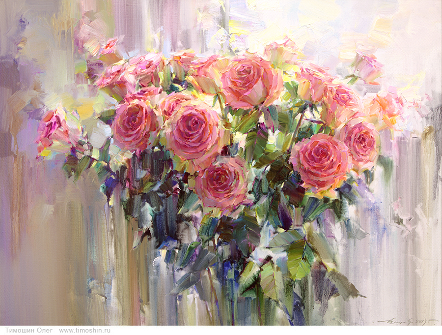

Живопис
Українські живописці
Токар Наталія
Художник і його картини - це мальовничий роман довжиною в життя, повний пристрасті, любові, драм і розчарувань. Картини сходять з полотен і поселяються назавжди в серці художника. Там язиками полум'я метається і кличе, не дає спокою незрозуміле бажання творити. Змушує взяти в руки олівця і пензля і виплеснути в жорстокий навколишній світ свої самі ніжні й тендітні образи і фантазії. І ця пристрасть проходить крізь століття, пробуджуючи і запалюючи чужі душі.
Токар Наталія Анатоліївна, сучасний художник-мaрініст, народилася в Харкові 1973 року. З дитинства займаюся улюбленою справою. Закінчила харківську художню школу імені Рєпіна. Потім отримала вищу художню освіту. Є членом союзу вільних художників Харкова. Має постійну експозицію на харківському та київському міському вернісажі. Прихильниця реалістичної школи живопису. Улюблена тематика - морські пейзажі.
"Водна стихія - натхнення всього мого життя."
Роботи знаходяться не тільки в приватних колекціях України та Росії, а так само і в інших країнах світу: у Великобританії, Німеччині, Чехії, Ізраїлі, Канаді, Китаї та ін
 |
 |
 |
Тимошин Констянтин
" В єдності з природою " - назва одного з перших плакатів художника стало лейтмотивом його творчості. Ця тема присутня у всіх творах художника - будь то плакат, акварельні аркуші, живописні твори маслом, дизайн створюваних інтер'єрів. Картини маслом та аквареллю, виконані художником, завжди викликають захоплений інтерес глядача своїм майстерним виконанням і душевною теплотою.
Улюблена техніка художника - акварель, масло. Відточена безперестанної роботою і пошуками протягом багатьох років, його техніка акварельного живопису унікальна. Пронизані світлом, наповнені складною гамою кольорів, акварелі несуть радість життя і надії.
Автор бачить завдання через зображення природи доторкнутися до чуттєвого сприйняття глядача, викликати глибокі внутрішні емоції. "Сум'яття почуттів ", "Море бажань", "Біле озеро " продовжують цикл " Сприйняття ", розпочатий картинами " Ранній ранок ", " Шелест ", " Шепіт ". Картини виконані в новій техніці: акварель, акриловий лак на полотні.
Для художника цікаве створення циклів мальовничих картин, пов'язаних спільною темою та поставленої творчим завданням, створення парних робіт, виконаних як в техніці акварельного живопису, так і олійного живопису. Постійне вдосконалення і пошук акварельного письма дозволяють відкривати художнику все нові грані володіння майстерністю в цій дивовижній , що не терпить виправлення і помилок, творчої акварелі.
 |
 |
 |
"Я не пишу аквареллю, - каже художник, - акварель дозволяє увійти в свій світ, використовувати її чарівні властивості ".
Для акварельного живопису Олега Тимошина характерне використання природних органічних властивостей акварелі - стікання, змішання, плинності з мінімальним технічним втручанням. Основоположним тут є добре володіння малюнком і прекрасна візуальна пам'ять.
Тонка поетичність, філософське підгрунтя тем, порушених в останніх роботах, говорить про нову щаблі осмислення художником своєї творчості. Чуйність і тонкість сприйняття, духовність і чудове технічне виконання роблять картини художника особливо запам'ятовуються.
Закінчив Білоруський державний театрально- художній інститут в 1982 році.
Початок професійної діяльності художника співпало з активною творчою роботою у графіку, плакаті. Плакат перебудови - невід'ємна частина історії великих змін великий страни. Прічастность художника до подій такого масштабу особливо цінна. З 1988 року - член Спілки Художників СРСР.
Художник - учасник численних виставок і конкурсів. Живопис Тимошина Олега успішно бере участь у численних міжнародних виставках. Твори живопису сучасного художника знаходяться в державних та приватних збірках в Росії і країнах ближнього і далекого зарубіжжя.
Член Московської спілки художників.
Яскрава творча індивідуальність, широкий діапазон творчих устремлінь, високу майстерність в акварельного живопису безсумнівно виділяють художника і привертають до його творчості пильну увагу глядача і фахівців від мистецтва.
Шиптя Констянтин
Сучасний український художник Костянтин Шиптя працює в різних художніх техніках, проте найулюбленішою є живопис маслом. Довгі роки художник шукає свій почерк і тільки йому притаманну живописну техніку . Його картини наповнені загадками і ребусами, вони задають питання, але не дають відповіді . Кожне полотно - це дзеркало в душу глядача, де за тонкою павутиною полотна ховається потаємне життя. Його картини наповнені алегоріями, іносказаннями, де здавалося б, в звичайних сюжетах раптом виникають зовсім несподівані повороти. І глядач, дивлячись на картину, стає співавтором художника, домальовуючи уявою продовження тих сюжетів, які запропонував автор.
Художник через зображення людей і знайомих предметів намагається показати ті тонкі ледь вловимі почуття, які важко передати недосконалою мовою слів, а можна тільки вдихнути, як ковток повітря, і відчути на смак. Його картини зачіпають струни душі, які можливо мовчали довгі роки, чекаючи цього ніжного дотику ...
 |
 |
 |
Багато картин художника можна зв'язати в серії, об'єднані одніим творчим завданням: наприклад штучні гротескні роботи « Дебати », «Мисливці на склотару », « Ключник » показують внутрішнє, не завжди привабливе, але цікаве життя суспільства. Художник любить своїх героїв і знаходить в наайсіріших буденних персонажах стільки чарівності і внутрішньої краси. Техніка олійного живопису дає можливість показати сірий світ міста - яскравим і сонячним.
Його жанрові картини наповнені пристрастю, емоціями і почуттями, які змушують посміхатися і співпереживати. Глядач впізнає в комічних персонажах своїх знайомих або самого себе . Оригінальні філософські сюжети подаються в якості притч , над якими треба замислитися з легкою посмішкою на вустах. Вони легкі і глибокі одночасно, під маскою простих мальовничих образів художник показує вічні загадки людського характеру.
Вперед Назад / Вгору